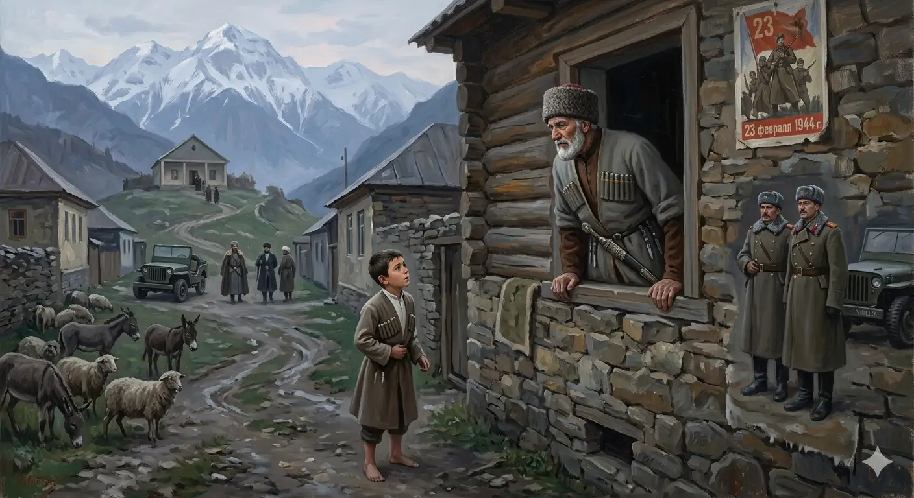

И.А. Дахкильгов. Хьехаме дувцарш - поучительные рассказы-притчи.
И.А. Дахкильгов. Хьехаме дувцарш - поучительные рассказы-притчи. Из ингушского фольклора.

Со кхы собранешка ухаш вац
Дукха ха йоацаш хинна хӀама да из. Юрта, Ӏуйранна, цхьа къонах волча арара кхайкав цхьа кӀаьнк. - Фу ях Ӏа? - хаьттад. - Городера хьакимаш баьхкаб, къонахашка правление хьагулле йоах. Хьога дӀавола, йоах! - Иштта гӀотта а ваь 1944 шера 23 феврале, собране вола, аьнна со меттара а гӀоттаваь, цхьаккха бехк боацаш кхойтта шера Ӏовахийта хиннавар со, цу ханара денна кхы собранешка ухаш вац со. Иштта дӀаала царга, - аьннад къонахчо.
РУССКИЙ
Я больше не хожу на собрания
Этот случай произошел не так давно. В каком-то селе, утром, с улицы стал окликать мужчину какой-то мальчик. - Чего тебе? - спросил мужчина, выглянув в окно. - Из города приехало какое-то начальство. Всех мужчин просят явиться в правление. Тебя тоже туда приглашают. - Вот также, утром, 23 февраля 1944 года, меня пригласили на собрание, а затем ни за что ни про что нас всех отправили в ссылку на тринадцать лет. Передай им всем, что с того злопамятного дня я больше на собрания не хожу! - сказал тот мужчина.
ENGLISH
I don't go to meetings any more
This incident happened not so long ago. One morning, in a village, a boy started calling out to a man from the street. 'What do you want?' asked the man, peering out of the window. 'Some officials have arrived from the town. All the men are being asked to report to the council. You're invited there too.' 'Just like that, one morning on 23 February 1944, I was invited to a meeting, and then, for no reason at all, they sent us all into exile for thirteen years. Tell them all that, ever since that fateful day, I've never been to another meeting!' said the man.
НОХЧИЙН
Со кхин собранешка оьхуш вац
Дукха хан йоцуш хилла хӀума ду иза. Йуьртахь, Ӏуьйранна, цхьа къонах волчехь арара кхайкхина цхьа кӀант. - ХӀун бах ахь? - хаьттина. - ГӀалара хьаькимаш баьхкина, къонахашка правлене схьагулле боху. Хьоьга дӀавола, боху! - Иштта гӀатта а вина 1944 шеран 23 февралехь, собране вола, аьлла со меттара а гӀаттийна, цхьа а бехк боцуш кхойтта шеран дӀавахийтина хилла вара со, цу хенара дуьйна кхин собранешка оьхуш вац со. Иштта дӀаала цаьрга, - аьлла къонахчо.
ПОГОВОРКИ
ГӀарагӀура кӀоригаш а йиа, цогало яьхад: “Вай доттагӀий долаш фу бе я уж ейнараш, хьа кӀоригаш е са кӀоригаш яр аьнна”. Съела лиса журавлят и сказала: “Раз мы друзья, что за разница, твои ли, мои ли детеныши пропали!” The fox ate the crane chicks and said, "Since we’re friends, what difference does it make whether your chicks or mine are gone!" ГӀаргӀулин кӀорнеш а йиъна, цхьогало баьхна: "Вай доттагӀий долаш хӀун бе йу уьш йейнарш, хьан кӀорнеш йа сан кӀорнеш йар аьлла”.ДӀаьхача хабарал худар тол. ДӀаьхача хабарал лоаца муш (охк) тол. Лучше есть кашу, чем вести длинные пустые разговоры. Короткая веревка (шнур) лучше пустой болтовни. Better to eat porridge than to indulge in long empty talk. A short rope is better than a long empty word. Дехачу хабарал худар тоьлу. Дехачу хабарал боца муш (бухка) тоьлу.Къонахчун дош отташ хила деза. Мужское слово должно быть весомым (твердым). A man's word must carry real weight. Къонахчун дош хӀуттуш хила деза.КӀай яр, аьнна, Ӏаьржа яр, аьнна, хьакха ше маярра хьакха я. Что белая, что черная – свинья, она и есть свинья. Whether white or black, a pig is still a pig. КӀай йар, аьлла, Ӏаьржа йар, аьлла, хьакха ша йарра хьакха йу.“КӀезига кхы а дӀахо хол”, - оалаш, саг охка вахийтав. Частенько повторяя “чуточку подвинься”, человека в пропасть столкнули. By constantly saying "just move over a little more," they pushed a man off the cliff. "КӀезиг кхин а дӀахил", - олуш, стаг ахках вахийтина.ПхьегӀа бартал ерзайича, цу чу доацар ӀогӀоргдац; лихьанца машар бийцача, дохьаж мара кхетаргдац (Озиев Ахьмада поэзе тӀара). Если перевернуть посудину из нее не выльется то, чего в ней нет; если со змею в мире жить – отравленным быть. Tip over an empty vessel and nothing pours out; make peace with a snake, and you'll only get poison for it. ПхьегӀа бертал йерзийча, цу чуьра доцург охьагӀур дац; лаьхьанца машар бийцича, дӀовш бен кхетар дац (Озиев Ахьмадан поэзин тӀера).Саг ма отталва бакъдар харцде, харцдар бакъде. Никому не пожелай из правды делать кривду, а из кривды делать правду. Never let yourself turn truth into falsehood, or falsehood into truth. Стаг ма хӀоттийла бакъдерг харцдан, харцдерг бакъдан.Хьайза жӀале цӀог цӀаккха нийсаденнадац. Загнутый собачий хвост никогда не разогнется. A crooked dog's tail never straightens out. Хьаьвзина жӀаьлан цӀога цкъа а нисделла дац.Хьайх тийшача хӀаманна доал деш хьо веце, венначул тӀехьагӀа хьай кашан да хургвац хьох. Если ты не хозяин дела, доверенного тебе, то по смерти ты не будешь даже хозяином своей могилы. If you don't fulfill your duty over what was entrusted to you, you won't even be master of your own grave after death. Хьайх тешначу хӀуманна дола деш хьо вацахь, веллачул тӀаьхьах хьан кошан да хир вац хьох.Хьох-м тешар со, хьо тешачох тешац. Тебе-то я верю, но не верю тому, кому ты веришь. I trust you, but I don't trust the one you trust. Хьох-м тешар со, хьо тешачух тешац.Шийна даь дика сага атта дицлу, шийна даь во дицлац. Человек нередко забывает сделанное ему добро, но вот сделанное зло – никогда. A person easily forgets the good done to them, but never forgets the harm. Шена дина дика стаган атта дицло, шена дина вон дицлац.Ӏовдала вац наха Ӏеха ца вер. Тот не дурак, кого люди не могут дурачить. One is not truly a fool unless people manage to fool them. Ӏовдал вац наха Ӏеха ца вийриг.